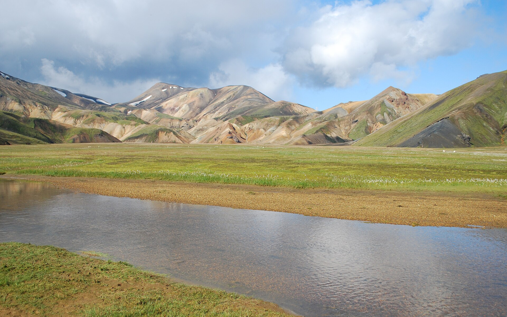
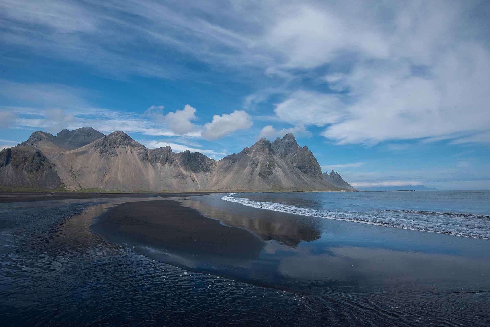
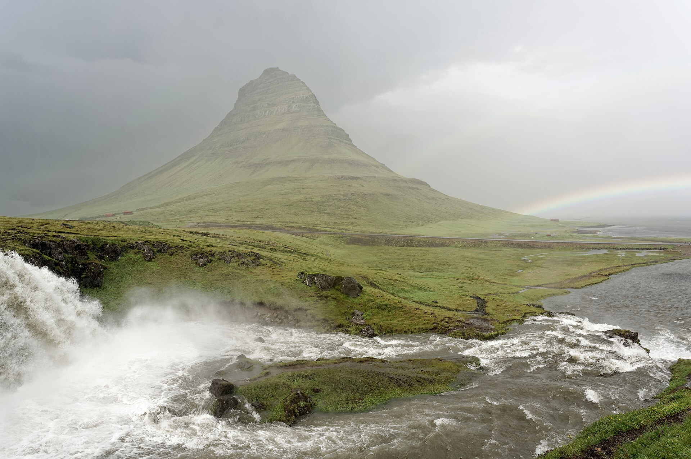

On or close to Route 1.
Complete video atlas · 24 mapped destinations
The whole
island.
Every named or clearly identifiable stop in Ryan Shirley’s Iceland film—placed against the Ring Road so we can see the full temptation before cutting it down.
- 10
- video chapters
- 24
- mapped stops
- 1,322 km
- Ring Road before detours
- 12–16
- nights for the full idea



24pins
The base loop alone is 1,322 km. Ryan adds two highland expeditions, Þórsmörk, three East Iceland detours, Dettifoss/Hafragilsfoss, and Snæfellsnes.
See the time ladder →01 / WHAT THE MAP REVEALS
It is not one loop.
It is four trips.
Ryan’s film looks seamless because the edits erase the geography. On the road, his list breaks into a paved Ring Road spine, substantial regional spurs, interior F-road terrain, and one specialist river-crossing day.
Worthwhile, but adds hours.
Separate weather day.
Þórsmörk river crossings.
02 / THE COMPLETE ATLAS
Filter the ambition.
Tap any pin or list row. Its photo, access reality, video timestamp, and driving role remain open beside the map.
Ring Road spine major spursDetails stay open—no hover required
03 / ALL TEN CHAPTERS
The film, put back into geography.
Each chapter opens its full stop list. Use “show on map” to isolate that region and compare it with the rest of the island.
04 / THE TIME LADDER
How much Iceland does each trip buy?
The full video is not a four-day Ring Road. This ladder shows where the route changes from a windshield marathon into a trip.
Choose one quarter
South Coast winsWaterfalls, Vík, Fjaðrárgljúfur; Jökulsárlón only with the fourth night. This is the current short plan.
- Keep 6–8 pins
- Skip Ring Road claim
- No north, east, or Snæfellsnes
Fast core loop
Possible, not pleasantRoute 1 every day with the main south, east, Mývatn, and Goðafoss stops. Weather has almost no room to move.
- Cut all Highlands
- Cut Þórsmörk
- Cut Snæfellsnes
Real Ring Road
First credible versionTwo south nights, two east/northeast, Mývatn, Akureyri, and two west/flex nights. Choose two detours.
- Keep Stokksnes
- Pick Seyðisfjörður or Stuðlagil
- Still cut Highlands
Ryan core atlas
Recommended full loopMost paved highlights, Snæfellsnes, one proper flex day, and one large adventure swap.
- Add Snæfellsnes
- Add East detours
- Choose Highlands or Þórsmörk
The entire film
Everything, honestlyAll regions plus Landmannalaugar, highland canyon/crater stops, guided Þórsmörk, hikes, and weather recovery.
- 4×4 vehicle strategy
- Guided Þórsmörk day
- Two true weather flex days
05 / SEPTEMBER REALITY
The map is the dream.
Conditions choose the route.
Early September can still support the Ring Road. It does not guarantee open, calm Highland access—and it never turns glacial river crossings into a rental-car activity.
F-roads are a different trip
Landmannalaugar, Bláhylur, and Sigöldugljúfur require a suitable vehicle and a same-morning road check. Rental terms and river-crossing exclusions control the plan.
Þórsmörk
Ryan used a specialist super-jeep operator because the route crosses deep, changing glacial rivers. Treat it as a booked guided day.
Hikes accumulate
Reykjadalur, Hengifoss/Litlanesfoss, Stuðlagil’s better side, and glacier viewpoints are not ten-minute photo stops when carrying a child.
Roads, wind, surf
Use live road and SafeTravel guidance each morning. Reynisfjara warnings and northeast road conditions can change the day’s order.
Live road map ↗06 / SOURCES + PHOTOGRAPHY
One film. Current access rules. Open map data.
The chapter timestamps, stop sequence, and access anecdotes come from his complete Iceland travel film.
Watch the source film ↗Highland and Ring Road conditions should be checked live; September access cannot be promised months ahead.
Open live conditions ↗Official regional context, safety guidance, and managed-trail information supplement the video.
Official Ring Road overview ↗OpenStreetMap tiles; locally cached Wikimedia Commons photography with original file links below.
Wikimedia Commons ↗New imagery: Landmannalaugar (Chmee2/Valtameri, CC BY 3.0), Laugavegur/Þórsmörk (Michal Klajban, CC BY-SA 4.0), Stokksnes (Daniel Oberhaus, CC BY 4.0), Hengifoss, Seyðisfjörður, and Kirkjufell (Jakub Hałun, CC BY 4.0), Mývatn (Giles Laurent, CC BY-SA 4.0), Goðafoss (Martin Falbisoner, CC BY-SA 4.0), and Dettifoss (Roger McLassus, CC BY-SA 3.0), via Wikimedia Commons.